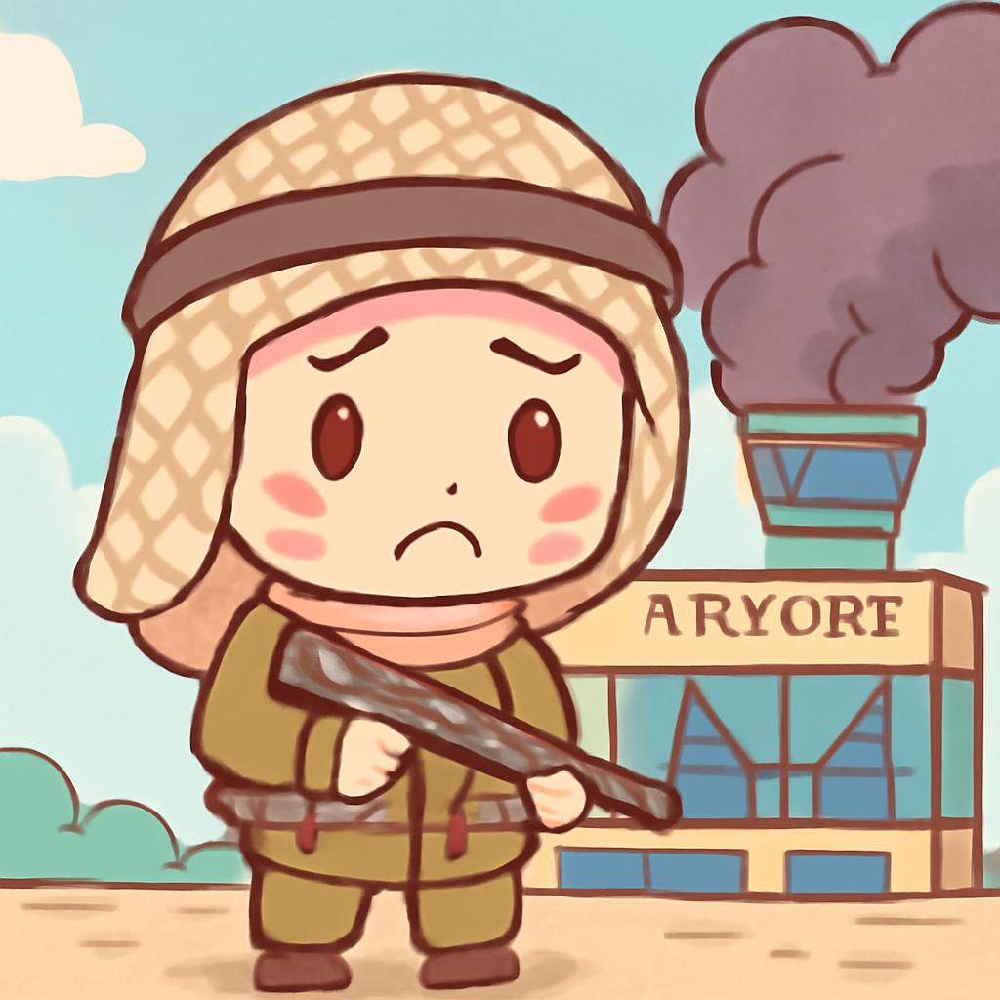
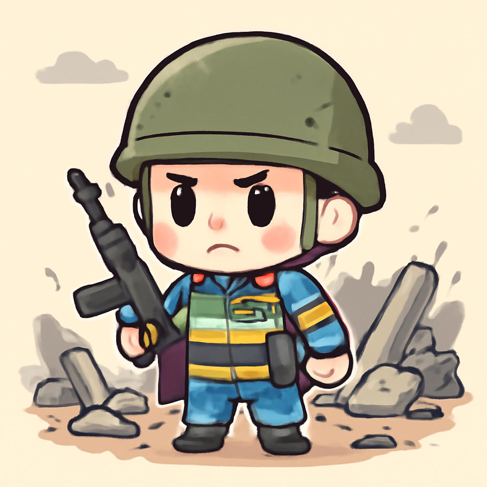
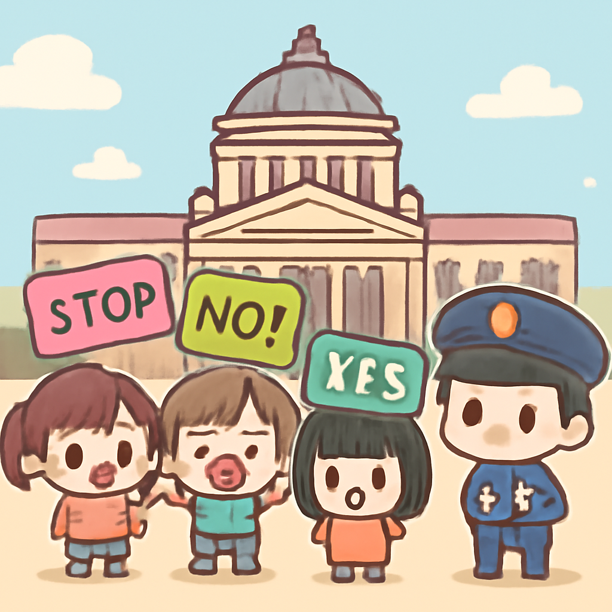

其一 · 沙烏地阿拉伯利雅德 · 機場襲擊造成12人死亡
利雅德機場遭襲擊，造成多人死傷

在沙烏地阿拉伯的利雅德，最近發生了一起駭人的襲擊事件，造成12人喪生，309人受傷。這起事件發生在也門胡塞武裝宣稱攻擊機場的幾天後，顯示出該地區的緊張局勢持續升級。這不僅影響了當地安全，也讓整個中東地區的局勢更加複雜。無論如何，這可不是一個想去度假的地方。
🔗 原始新聞 ↗
2026-10-11 · 以古觀今，以笑抗愁
利雅德機場遭襲擊，造成多人死傷

在沙烏地阿拉伯的利雅德，最近發生了一起駭人的襲擊事件，造成12人喪生，309人受傷。這起事件發生在也門胡塞武裝宣稱攻擊機場的幾天後，顯示出該地區的緊張局勢持續升級。這不僅影響了當地安全，也讓整個中東地區的局勢更加複雜。無論如何，這可不是一個想去度假的地方。
🔗 原始新聞 ↗
基輔附近遭俄方攻擊，造成20人死亡

在烏克蘭基輔附近，俄軍最近進行了一次可怕的滑翔炸彈攻擊，導致至少20人喪生，其中甚至包括兒童。烏克蘭總統澤倫斯基表示，這是俄方對美國柴油交易的“感謝”。此事件進一步惡化了兩國間的緊張關係，國際社會的關注與譴責隨之而來。可見，這場衝突仍然是個黑暗的故事，沒有結局。
🔗 原始新聞 ↗
莫斯科機場因烏克蘭無人機緊急封鎖
最近，烏克蘭的無人機對莫斯科的機場發起了攻擊，導致政府包機不得不繞行或改道。這一事件再次凸顯出俄烏衝突的影響力，甚至讓普京也無法安穩地返國。這場戰爭不僅在前線，連普京的回程也變得風雲變幻。
🔗 原始新聞 ↗
新德里爆發抗議，反對選民名冊修訂

在印度新德里，民眾因不滿政府對選民名冊的重大修訂而展開抗議。警方已增派人員以應對日益升高的緊張局勢。這場抗議不僅是對政策的不滿，更是對民主程序的捍衛，讓我們看到政治中人們的熱情與堅持。當然，這也讓新德里變成了“抗議之都”。
🔗 原始新聞 ↗
巴勒斯坦當局宣布選舉延期，內部矛盾加劇
巴勒斯坦權力當局近日宣布，由於內部矛盾加劇，原定的選舉將被延期。這一決定引發了社會各界的廣泛關注與討論，尤其是在法塔赫黨內部的緊張局勢下，選舉的延期可能會加深政治分歧。這讓許多人感到，不同的聲音在此時此刻顯得尤其重要，甚至比選舉結果更具影響力。
🔗 原始新聞 ↗